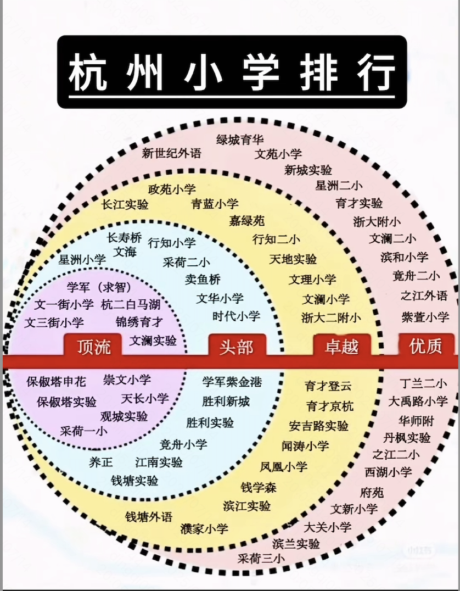
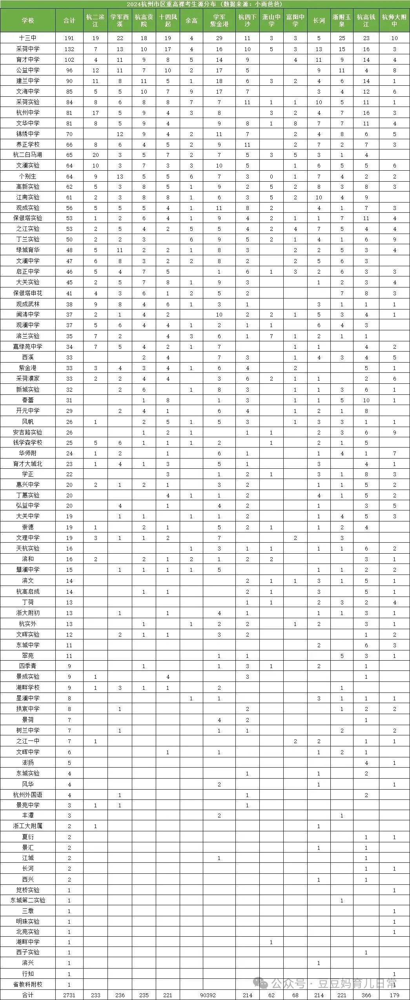
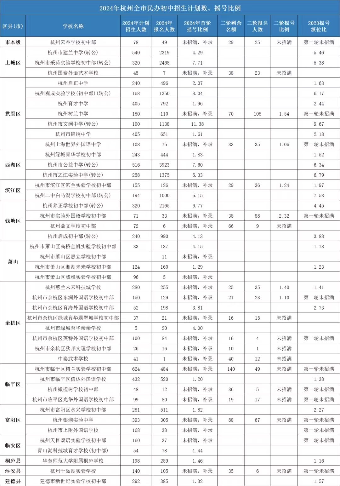

概述
- 本篇记录和总结一些学校数据
- 每年记录初中排行
一 小学

二 初中
2025年初中排行

2024年重高生源分布

梯队
第一梯队（顶尖民办/公办）
-
文澜中学（拱墅区）：重高率36.46%，优高率82.33%
-
建兰中学（上城区）：重高率33.54%，前三率11.88%
-
育才中学（拱墅区）：重高率33.33%，优高率74.41%
-
杭二白马湖学校（滨江区）：重高率46.51%，前三率18.14%（民办转公后热度最高）
第二梯队（优质公办/民办）
-
采荷实验（上城区）：优高率79.5%，重高率32.5%
-
公益中学（西湖区）：优高率77.5%，分配生政策优势显著
-
锦绣中学（拱墅区）：重高率29.63%，摇号比例1.61:1
-
钱学森中学（上城区）：前三率10.55%，科技特色突出
第三梯队（区域强校）
-
十三中（西湖区）：重高率34.96%，公办“领头羊”
-
江南实验（滨江区）：优高率74%，规模大且均衡
-
保俶塔申花（西湖区）：重高率31.98%，实验班优势明显
三 小升初策略
1 基本策略框架
目前杭州小升初择校就3条升学路径
1、参加万人摇的杭外(杭州外国语学校)
2、摇民办
3、直升公办
其中杭外摇号及现学现测安排在5月份，如果未被杭外录取，并不影响后续的民办摇号和公办直升。 在杭外，每年都有一批毕业生通过自身努力脱颖而出，被国内著名高校提前录取。2024年，92名外语保送生中，有51人被清北复交浙录取，占保送名额的55.43%，名校录取占比再创新高！
1.1 是否摇民办
要摇吗？当然要摇，大部分的学生都适合去摇一下民办学校。 民办学校至少现在来看还有着以下几点优势
①优秀的师资
②优秀的教研（包括但不限于校本课程、练习、试卷）
③严格的教学管理
④有深度的知识拓展（教学内容不局限于中考内容，拓展知识较多，有利于适应未来高中的学习）
⑤优秀的中考优高率数据（优高率代表了学校基本办学水平）
但是以下几种情况，需要慎重考虑，一般不建议摇民办
①对口公办学校质量不错且极其热门，存在调剂风险
（例如文澜实验已经连续三年调剂一表生，落户年限要求7年及以上，十三中只给一表生兜底），具体家长可以在入学早知道上查阅自己学校的预警情况，去年存在户籍生分流，且今年持续红色的都存在调剂风险。
②孩子成绩中游，得到了公办实验班保底承诺，但没有得到民办兜底承诺的（拱墅区特有情况，建议直升公办实验班，到了初中努力鸡娃争分配，摇不中回来实验班没有了，风险太大）
③孩子成绩处于小学中下段
④孩子做作业效率极低，小学就要拖到10点后的
⑤对于民办学费负担有一定压力的请谨慎选择，三年下来少的要20W，多的要近30W，也是一个不小的负担。
1.2 摇哪所民办?
我的理念是尽可能提高自己择校的下限
如果对口公办是区内的优质公办，择校时可以选择摇号难度大，质量比较好的民办；
如果对口公办是区内偏弱的公办，择校时可以选择摇号难度小，质量还不错的民办；
西湖区：
西湖区比较推荐摇号的三所学校是公益中学、之江实验、绿城育华，选上限摇公益或者之江，保下限摇育华
至于公益和之江怎么选，学校整体师资成绩差距都不大， 主要看你打不打算住校。想住校，没得选，只能选之江，不想住校，选个离家近一点的，初中时间很宝贵，接送上能省一点时间是一点时间。
至于初中住校好不好？阿潘校长在探校宣讲时提到了初中生通校比住校更适合。老师觉得初中生住校会更好一些，这点仁者见仁智者见智。
住校的优势我觉得主要是以下几点：
①作息规律，不需要家长操心，不用担心家中电子产品影响孩子的学习
②上学放学不用接送，大大节省了时间
③减少了青春期父子母子之间的接触，减少了产生青春期矛盾的可能
总结来说，只要你舍得孩子去住校，舍得让孩子吃住条件艰苦一点，舍得一周少见几次孩子，那么对于大部分工薪阶层的家长，尤其是和孩子之间沟通已经开始产生青春期矛盾的家长，住校是比较合适的选择。
拱墅区：
拱墅区的民办选择就比较多了，比较推荐摇号的是文澜中学、育才中学、锦绣中学、观成中学、启正中学。
从24年中考成绩来看，文澜依旧是拱墅的领头羊，观成、启正、育才系实力不相上下。综合来看，这几所民办学校的实力整体都是非常不错的。
从24年的摇号难度来看，文澜中学摇中难度最高，比例高达11.38：1，其次是观成实验，8.04:1，育才、锦绣、启正相对容易些，都在2左右
从学校管理来看，拱墅这边的民办学校都是属于管理严格，学习强度比较高的。
鉴于拱墅目前公办民办差距非常大这个特点，老师建议拱墅家长在摇号时，尽可能选下限高的组合来进行摇号，比如说对口公办相对优质的，可以考虑摇摇育才、观成之类的，对口公办非常一般的，建议就启正，锦绣摇一摇。成绩中游学生如果能拿到公办实验班的保底，可以不摇号直接选择直升。
上城区：
上城区只有建兰和采实两个选择。在今年的中考中，采实和建兰都取得了非常不错的成绩。相比之下，建兰可能更加适合顶部学生，尤其是打算往竞赛方向发展的学生，采实可能更加适合走常规中考路线的学生。
滨江区
滨江可选空间比较小，如果对口高新、闻涛、江南实验、滨和这些大公办，可以考虑摇白马湖或者直接直升，读滨兰的钱省下来去外面找找合适的培训，争公办的分配可能是比较好的选择。
钱塘区
钱塘看起来也没有太多的选择，想摇号基本就选择养正了，杭高启成学校位置比较远，不是家住那边的不太建议摇号，接送会是未来初中三年的大问题。

从上面这个表看: 杭州之江实验中学 > 杭州市公益中学 > 杭州绿城育华学校初中部
2 官方信息和新闻
问题列表
- 小升初摇民办，第一批没摇中怎么办? 个人理解是未招满的民办学校来录取你.
四 杭州民办初中名单
上城区
杭州市建兰中学（“公参民”转公学校）
杭州市采荷实验学校（“公参民”转公学校）
拱墅区
杭州观成实验学校（“公参民”转公学校）
杭州市锦绣中学
杭州启正中学
杭州市文澜中学（“公参民”转公学校）
杭州育才中学
西湖区
杭州绿城育华学校(初中部)
杭州市公益中学（“公参民”转公学校）
杭州市之江实验中学（“公参民”转公学校）
滨江区
杭州市滨江区滨兰实验学校
杭州二中白马湖学校（“公参民”转公学校）
萧山区
高桥金帆实验学校
杭州市萧山区湘湖未来学校
余杭区
杭州市余杭区育海外国语学校
临平区
杭州市临平区信达外国语学校（初中部）
钱塘区
杭州养正学校
杭州启成学校
富阳区
杭州市富阳区永兴学校(初中部)
临安区
杭州市临安区青山湖科技城育才学校
桐庐县
华师桐庐学校
建德市
建德市新世纪实验学校(初中部)